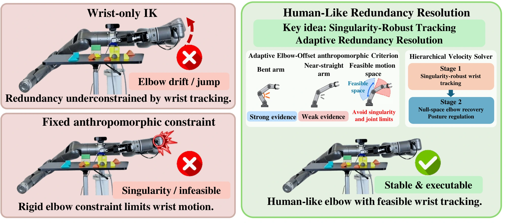
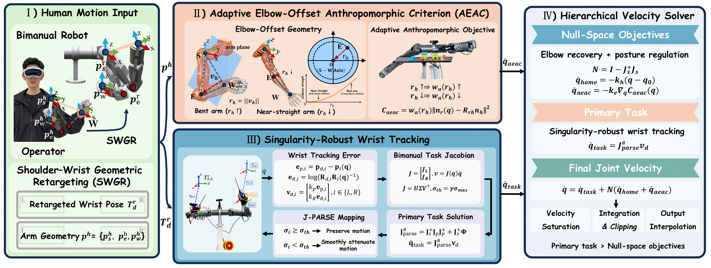
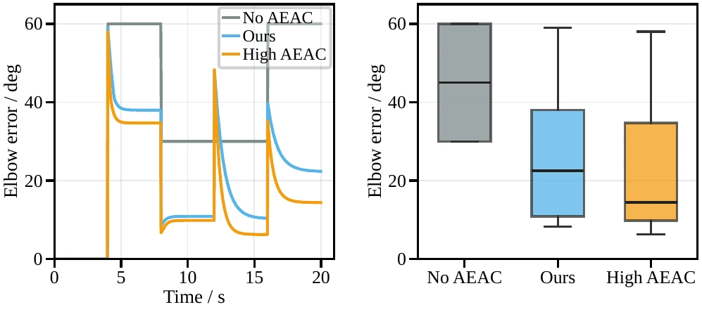
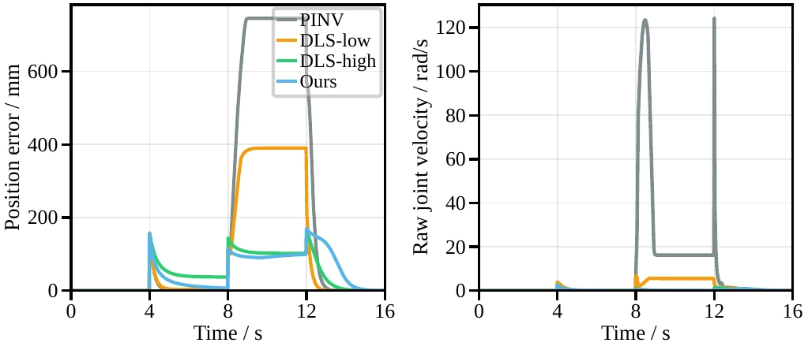

Geometric Retargeting
Shoulder–wrist geometry maps human upper-arm motion and wrist orientation into robot-scale targets while retaining the operator's end-effector intent.
for Real-Time Bimanual Humanoid Teleoperation
1 Institute of AI for Engineering, Tongji University * Corresponding authors
We enable natural and stable bimanual humanoid teleoperation by combining adaptive human-like elbow guidance with singularity-robust wrist tracking.
Real-time bimanual humanoid teleoperation requires accurate wrist tracking and stable arm posture. Kinematic redundancy allows different elbow configurations for the same wrist pose. Existing methods that track only the wrists can therefore cause elbow drift or configuration jumps. Anthropomorphic constraints help guide elbow posture, but fixed constraints can restrict singularity avoidance and impose unreliable guidance as the human arm straightens. We propose a human-like redundancy-resolution framework that prioritizes singularity-robust wrist tracking and uses adaptive elbow guidance to resolve redundancy. Shoulder–wrist geometric retargeting generates robot-scale wrist targets. Elbow-offset direction guides posture, and its magnitude controls guidance strength. Guidance weakens and deactivates as the human arm straightens. A hierarchical velocity solver then applies adaptive elbow guidance in the wrist-task null space. In a fixed-wrist-target ablation, adaptive guidance reduces mean elbow-direction error by 54.4%. In a workspace-boundary stress test, singularity-robust tracking reduces peak raw joint-velocity demand by 97.9%. Real-world bimanual tasks and cross-platform retargeting demonstrate practical utility across robot morphologies.
01
A 7-DoF humanoid arm can reach the same 6-DoF wrist pose with many different elbow configurations. Wrist tracking alone therefore leaves the elbow underconstrained, which can cause unnatural drift or sudden configuration changes.
Adding a fixed anthropomorphic constraint does not fully solve the problem. Near full arm extension, the human elbow direction becomes unreliable, while rigid posture guidance can prevent the robot from using its redundancy to avoid singularities and joint limits. The controller must preserve the operator's wrist intent, recover a human-like posture when the observation is reliable, and release that guidance when it is not.

02
Our human-like redundancy-resolution framework translates human motion to robot-scale wrist targets, adapts elbow guidance to the reliability of human posture, and preserves wrist-task priority through a hierarchical solver.

Shoulder–wrist geometry maps human upper-arm motion and wrist orientation into robot-scale targets while retaining the operator's end-effector intent.
Elbow-offset direction guides anthropomorphic posture. Its influence progressively weakens and deactivates as the human arm approaches full extension.
A hierarchical velocity solver suppresses near-singular velocity amplification and applies posture guidance only within the wrist task's null space.
03
We evaluate 15 static arm poses, dynamic motion sequences, fixed-wrist ablations, and a near-boundary singularity stress test.




04
Simulation validates bimanual wrist tracking, human-like redundancy resolution, and stable joint motion before real-robot deployment.
Wide-range motion
From neutral posture through full extension and near-singular configurations, the controller maintains smooth motion and recovers naturally.
Coordinated manipulation
Both arms coordinate grasping, transport, stacking, and placement while preserving stable elbow configurations.
Tool use
One arm stabilizes the object while the other executes a constrained tool trajectory, requiring accurate bimanual coordination.
05
@misc{tan2026humanlike,
title = {Human-Like Redundancy Resolution for Real-Time Bimanual Humanoid Teleoperation},
author = {Tan, Chao and Sung, Ming Shin Cindy and Liang, Shuxian and Wan, Chaoqun and Huang, Zhen and Hua, Xian-Sheng},
year = {2026},
note = {Manuscript}
}